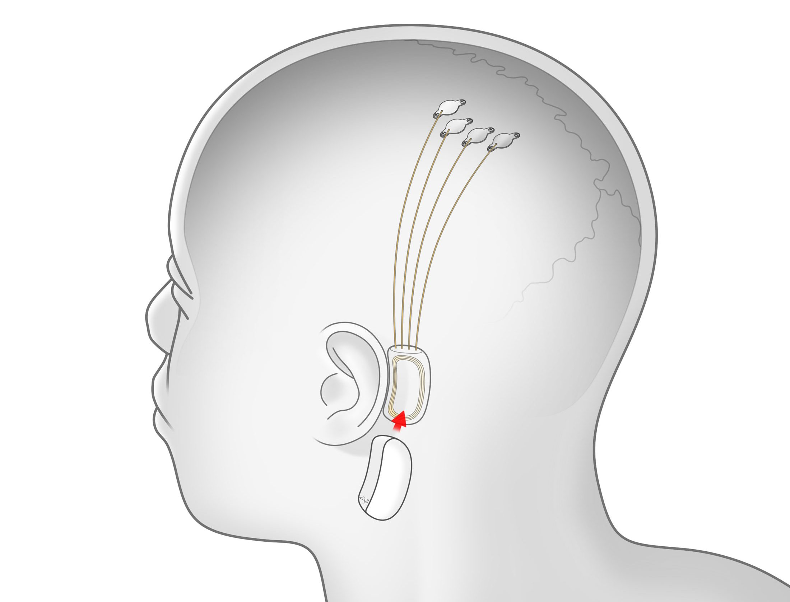

Hakkımda
Adım Talha İris. Şu an Sakarya Üniversitesi Bilgisayar Mühendisliği'nde okuyorum. Bölümü seçmemin nedenleri arasında bilgisayarda herhangi bir iş yaparken arka planından nelerin olduğunu merak etmem ağır basıyor ama onun dışında hayal gücüyle oluşturulabilecek şeylerin sanal dünyada neredeyse sınırsız olması da hep ilgimi çekmiştir. Bu yüzden bilgisayar mühendisliğinin merak ettiklerimi karşılayacağını düşündüm.
Genel olarak biyolojiye de ilgi duymam o konuda okumama sebep oldu. İnsanın kendi hayatında yaşadığı her küçük şeyin bile biyolojik ve psikolojik olarak bir karşılığı olması sürekli bunlara bakmama sebep oldu.
Bu iki ilgi alanımı birleştirmek hep aklımın bir köşesinde oldu ve dünya da buna doğru evriliyor. Daha bu konuda öğrenileccek çok şey olması da beni heyecanlandırıyor.
